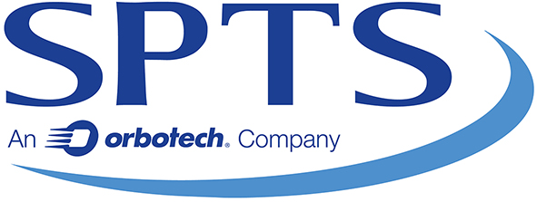

Industry Spotlight
December 2015

Orbotech Announces SPTS Technologies has Installed a 300mm MEMS Vapor HF Etch Release Solution at CEA-Leti
Yavne, Israel - December 17, 2015 - ORBOTECH LTD. (NASDAQ: ORBK) today announced that SPTS Technologies, an Orbotech company and a supplier of advanced wafer processing solutions for the global semiconductor and related industries, has supplied CEA-Leti, one of Europe’s largest micro- and nanotechnologies research institutes, with its industry-leading vapor HF etch release systems for 300mm microelectromechanical systems (MEMS) on CMOS development. ...>>September 2015
Siliconware Precision Industries Co., Ltd. and Hon Hai Precision Industry Co., Ltd. entered into a Letter of Intent whereby the parties will form a strategic alliance through the exchange of shares.
Taichung, Taiwan - August 28, 2015 - Hon Hai Precision Industry Co., Ltd. (TaiwanStock Exchange:2317.TT) (“Hon Hai”) and Siliconware Precision Industries Co., Ltd. (“SPIL” or the “Company”) (Taiwan Stock Exchange: 2325.TT, NASDAQ:SPIL) signed a Letter of Intent today, whereby the parties will form a strategic alliance through the exchange of shares in accordance with Article 156.8 of the Company Act. The alliance will provide customers with the best integrated service program through future collaboration on technology and business. ...>>Rudolph Technologies NSX 330 Series Widely Adopted for Advanced Packaging Inspection and Metrology
Flanders, NJ -September 1, 2015 - Rudolph Technologies, Inc. (NYSE: RTEC) today announced the widespread adoption and success of its newest macro defect inspection tool, the NSX® 330 Series. The NSX 330 Series provides high-speed macro defect inspection and 2D and 3D metrology for advanced packaging applications, which are being developed to support the mobility and the growing Internet of Things (IoT) markets. t ...>>July 2015
Imec and SPTS Technologies, an Orbotech Company, Collaborate on Critical Processes for 3D IC Wafer Stacking
San Francisco, CA – July 14, 2015 – Nano-electronics research center imec and SPTS Technologies, an Orbotech Company (NASDAQ: ORBK) company and supplier of advanced wafer processing solutions for the global semiconductor and related industries, announced at SEMICON West their collaboration on critical processes for 3D IC wafer stacking. They are jointly developing a highly accurate, short cycle-time dry silicon removal and low temperature passivation solution for through-silicon via-middle processing and thinning of the top-wafer in wafer-to-wafer bonding. ...>>June 2015
IEEE Components, Packaging and Manufacturing Technology Society Honors 2015 Award Winners
Piscataway, N.J. (May 28, 2015) – The IEEE Components, Packaging and Manufacturing Technology Society (CPMT) recognized its 2015 award winners at the 65th Electronic Components and Technology Conference (ECTC), 28 May 2015, San Diego, California, ...>>May 2015
SMTA Announces Retirement of JoAnn Stromberg
Minneapolis, MN, May 12, 2015 - The SMTA announced today that JoAnn Stromberg, the association’s Executive Administrator for the past 29 years, has announced plans to retire at the end of December 2015. ...>>JSR and imec Partner to Enable Next Generation EUV Lithography Resist Solutions
TOKYO, Japan and Leuven, Belgium – May 12, 2015 - JSR Corporation, a leading materials company and imec, a world-leading nanoelectronics R&D center, today signed a Letter of Intent (LOI) to partner in enabling manufacturing and quality control of EUV lithography materials for the semiconductor industry. This partnership will be formalized by establishing a joint venture with imec as minority shareholder. The signing ceremony was held at the Embassy of the Kingdom of Belgium in Tokyo (Japan). ...>>CORWIL Technology Receives Quality Management System Certification to SAE AS9100 Rev C.
Milpitas, CA, May 6, 2015 - CORWIL Technology announced today their Certification to the Aerospace Quality Management System, AS9100C, after a comprehensive audit by the international certification body NSF-ISR (NSF International Strategic Registrations). This major milestone demonstrates CORWIL’s commitment to the highest standards for contract management of assembly, test and reliability services. ...>>April 2015
Aries Electronics announces new thermal solutions for its test and burn-in socket line
Bristol, PA. April 13, 2015 – Aries Electronics, a US manufacturer of standard, programmed and custom interconnection products, burn-in and test IC sockets, and adapters used worldwide, announced the introduction of its new thermal profiling solution for its test and burn-in socket line of products. ...>>Promex Industries acquires Quik-Pak, a division of Delphon
Santa Clara, CA, USA, April 1 2015 - Promex Industries, announced today the acquisition of San Diego based Quik-Pak, a division of Delphon. Quik-Pak will retain its San Diego, CA location and operate as a division of Promex. The combined entities are now able to offer a broader range of electronic and microelectronic assembly services. ...>>March 2015
R&D Altanova announces equity investment by Riverside Partners
South Plainfield, NJ and Boston, MA; March 31, 2015 - R&D Altanova, Inc., the leading provider of full turn-key test interface solutions, announced today that it has closed on an equity investment by Riverside Partners, a middle-market private equity firm specializing in healthcare and technology industries. ...>>Nordson Asymtek NA Sales
Carlsbad, CA, USA - 24 March 2015 - Nordson ASYMTEK, a Nordson company (NASDAQ: NDSN), a global leader in dispensing, jetting, and coating equipment and technologies, announces the expansion and restructuring of its Americas sales team. With the changes, Brad Perkins has been promoted to general manager, Americas, for Nordson ASYMTEK. ...>>AIT introduces 3D-TSV ultra-thin wafer processing temporary bonding adhesive film
AI Technology, Inc. (AIT) has introduced a film format high-temperature temporary bonding adhesive for thin-wafer processing of a bonding device wafer to a carrier wafer. Temporary wafer bonding for thin-wafer processing is one of the key technologies for wafer-level 3D system integration. ...>>February 2015
NANIUM turned 5
Vila do Conde, 10th February 2015 - NANIUM S. A., an outsourced semiconductor assembly and test provider acknowledged for its leadership in advanced packaging, celebrates today its 5th anniversary as an independent company Though apparently young, the company has close to twenty years of expertise in the semiconductor industry since its inception in 1996 as Siemens Semiconductors. ...>>January 2015
Kulicke & Soffa Acquires Assembléon in Accretive Transaction; Expands Presence in Advanced Packaging, Automotive and Industrial Segments
SINGAPORE - Jan 12, 2015 - Kulicke and Soffa Industries, Inc. (NASDAQ: KLIC) ("Kulicke & Soffa", "K&S" or the "Company") today announced it has finalized the transaction to acquire a 100% equity stake of privately held Assembléon B.V. (Assembléon). The all-cash transaction, valued at approximately $98 million, closed on January 9, 2015 ...>>STATS ChipPAC Announces Plan to Relocate China Manufacturing Operation
STATS ChipPAC Ltd (the “Company”) wishes to announce that the Company’s wholly-owned subsidiary, STATS ChipPAC Shanghai, Co., Ltd. (“SCC”), has today entered into various agreements (the “Compensation Agreements”) with the Qingpu Land Planning Bureau, ...>>
<%- data.ads %>